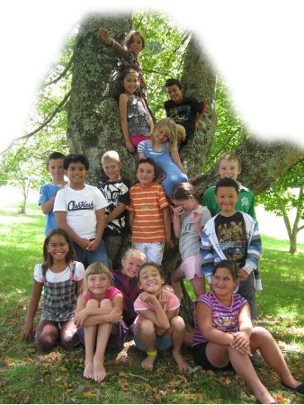

Welcome to Whakamaru School!
Our website has been designed to offer you the information you need about our school, whether you are a parent, student, prospective parents and students or just a passerby! Use the navigation links above to make your way around the site, they will appear on every page you visit on our site.
If you're not sure where you need to go to find the information you are looking for, see if it is listed in page descriptions below:
-
Homepage - This page! The best starting point, containing links to all the other pages, a description of what is on each page, and a link to download the latest newsletter. (This link is also available on our 'The Latest' page.)
-
Stay Up-to-date with News - 'The Latest'! - general information, newsletters, announcements and documents that parents may be interested in.
- Get In Touch With Us - All the details you need to get in touch with us - phone, email, and even our address, if you would like to visit!
-
Want to know more? - If you're interested in your child(ren) attending Whakamaru, here's where to go! View and download our Information Book, check out our Commonly Requested Information, and see the next steps to enrolling your child, or children.